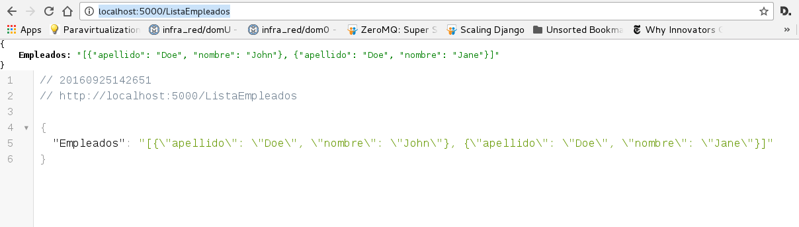

El artículo original lo pueden revisar acá.
El repositorio donde se encuentra el código en gitlab en la rama json1.
Los artículos sobre Flask lo pueden revisar en el enlace de artículos sobre flask.
Archivo Dockerfile
Se tiene el archivo Dockerfile a continuación:
FROM python
WORKDIR /code
RUN pip3 install --upgrade pip
RUN pip3 install flask
EXPOSE 5000
ADD . /code
CMD python app.py
El único cambio con respecto a la serie de tutoriales de Flask es que corre app.py en vez de run.py, se eliminaron varias dependencias de paquetes para simplificar la aplicación.
Archivo docker-compose.yml
El archivo docker-compose.yml se le cambia el nombre a la imagen, a continuación el código del archivo:
tutorial-json1:
build: .
ports:
- "5000:5000"
volumes:
- .:/code
Archivo app.py
El archivo app.py el único cambio con respecto al artículo anterior es que levanta el run en modo debug y se le dice la ip 0.0.0.0 a fin de que funcione desde el contenedor, el código a continuación:
#!/usr/bin/env python
#Se importa de flask a Flask, jsonify y json
from flask import Flask,jsonify,json
#Se crea la instancia de la aplicacion
app = Flask(__name__)
#Se tiene una lista de nombres
lista = ["John Doe","Jane Doe"]
#Se crea
#Se define el decorador route donde se da la ruta del servidor web.
@app.route("/ListaEmpleados")
def ListaEmpleados():
try:
#inicializar la lista de empleados
listaEmpleados = []
#crear instancias para llenar la lista
for i in lista:
datos = i.split(" ")
listaEmpleados.append({'nombre': datos[0],'apellido': datos[1]})
# convertir en dato json al diccionario
jsonStr = json.dumps(listaEmpleados)
except (Exception ,e):
print (str(e))
#Retorna el json
return jsonify(Empleados=jsonStr)
if __name__ == '__main__':
app.run(host="0.0.0.0",debug=True)
Ejecución
Ahora se construye la imagen y se ejecuta el contenedor Docker:
docker-compose build
docker-compose up
Al abri el navegador en la dirección http://localhost:5000/ListaEmpleados se tiene la imagen a continuación:

La imagen muestra el json en el navegador.
La salida de la ejecución del contenedor es la siguiente:
Creating tutorialflask_tutorial-json1_1
Attaching to tutorialflask_tutorial-json1_1
tutorial-json1_1 | * Running on http://0.0.0.0:5000/ (Press CTRL+C to quit)
tutorial-json1_1 | * Restarting with stat
tutorial-json1_1 | * Debugger is active!
tutorial-json1_1 | * Debugger pin code: 733-227-386
tutorial-json1_1 | 172.17.0.1 - - [25/Sep/2016 18:44:22] "GET /ListaEmpleados HTTP/1.1" 200 -
En próximo artículo se trabajará más con el json, como se menciona en el artículo original.
¡Haz tu donativo! Si te gustó el artículo puedes realizar un donativo con Bitcoin (BTC) usando la billetera digital de tu preferencia a la siguiente dirección: 17MtNybhdkA9GV3UNS6BTwPcuhjXoPrSzV
O Escaneando el código QR desde la billetera:

Comments !